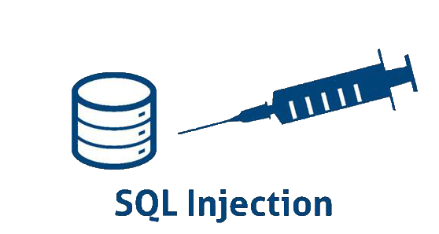
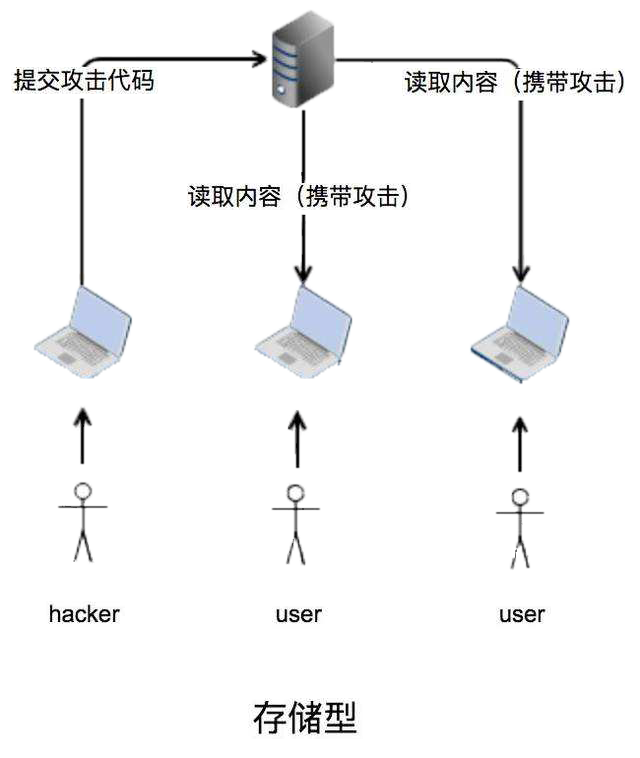

SQL注入审计
{
String sql = "select count(*) from admin where username='" + admin.getUsername() + "'and password='" + admin.getPassword() + "'" //SQL查询语句
try { Resultset res = this.conn.creatStatement().executQuery(sql); //执行sql语句
if(res.next()) { int i = res.getInt(1);//获取第一列的值
if (i>0) {return true;} //如果结果大于0，则返回true
} }
catch (Exception e) { e.printStackTree();//打印异常信息
}
return false;
}

XSS审计
<script>alert(/xss/)</script>
中级:
<sc<script>ript>alert(/xss/)</script>
<ScRipt>alert(/xss/)</script>
高级:
<img src=1 onerror=alert(/xss/)>

文件上传审计
原理:
当浏览器将文件提交到服务器端的时候，服务器端会根据设定的黑白名单对浏览器提交上来的文件扩展名进行检测，如果上传的文件扩展名不符合黑白名单的限制，则不予上传，否则上传成功。
文件包含审计
require_once()
include()
include_once()
已知的开源漏洞分析
else if($dopost == "safequestion")
{
$mid = preg_replace("#[^0-9]#", "", $id);
$sql = "SELECT safequestion,safeanswer,userid,email FROM #@__member WHERE mid = '$mid'";
$row = $db->GetOne($sql);
if(empty($safequestion)) $safequestion = '';
if(empty($safeanswer)) $safeanswer = '';
if($row['safequestion'] == $safequestion && $row['safeanswer'] == $safeanswer)
{ sn($mid, $row['userid'], $row['email'], 'N');
exit();
}
else
{
ShowMsg("对不起，您的安全问题或答案回答错误","-1");
exit();
}
}
已知的开源漏洞分析
命令执行审计
1.继承Web服务程序的权限去执行系统命令或读写文件
2.反弹shell
3.控制整个网站甚至控制服务器
4.进一步内网渗透
5.等等
2.反弹shell
3.控制整个网站甚至控制服务器
4.进一步内网渗透
5.等等
1. system("$arg"); //直接输入即可
2. system("/bin/prog $arg"); //直接输入;ls
3. system("/bin/prog -p $arg"); //和2一样
4. system("/bin/prog --p=\"$arg\""); //可以输入";ls;"
5. system("/bin/prog --p='$arg'"); //可以输入';ls;'
在Linux上，上面的;也可以用|、||代替
;前面的执行完执行后面的
|是管道符，显示后面的执行结果
||当前面的执行出错时执行后面的
在Windows上，不能用;可以用&、&&、|、||代替
&前面的语句为假则直接执行后面的
&&前面的语句为假则直接出错，后面的也不执行
|直接执行后面的语句
||前面出错执行后面的
漏洞利用:
示例一:
$arg = $_GET['cmd'];
if ($arg) {
system("$arg");
}
?>
示例二:
$arg = $_GET['cmd'];
if ($arg) {
system("ping -c 3 $arg");
}
?>
示例三:
$arg = $_GET['cmd'];
if ($arg) {
system("ls -al "$arg"");
}
?>
示例四:
$arg = $_GET['cmd'];
if ($arg) {
system("ls -al '$arg'");
}
?>